Case study · progetto personale
Allarme domestico GSM
Centralina d'allarme su Arduino Mega 2560 con display LCD 20×4, tastiera 4×3, sensori radio 433 MHz e modulo GSM SIM7600 per gli SMS di notifica. PIN, numero di telefono e sensori sono persistiti in EEPROM; il menu su LCD gestisce attivazione, sensori e test.
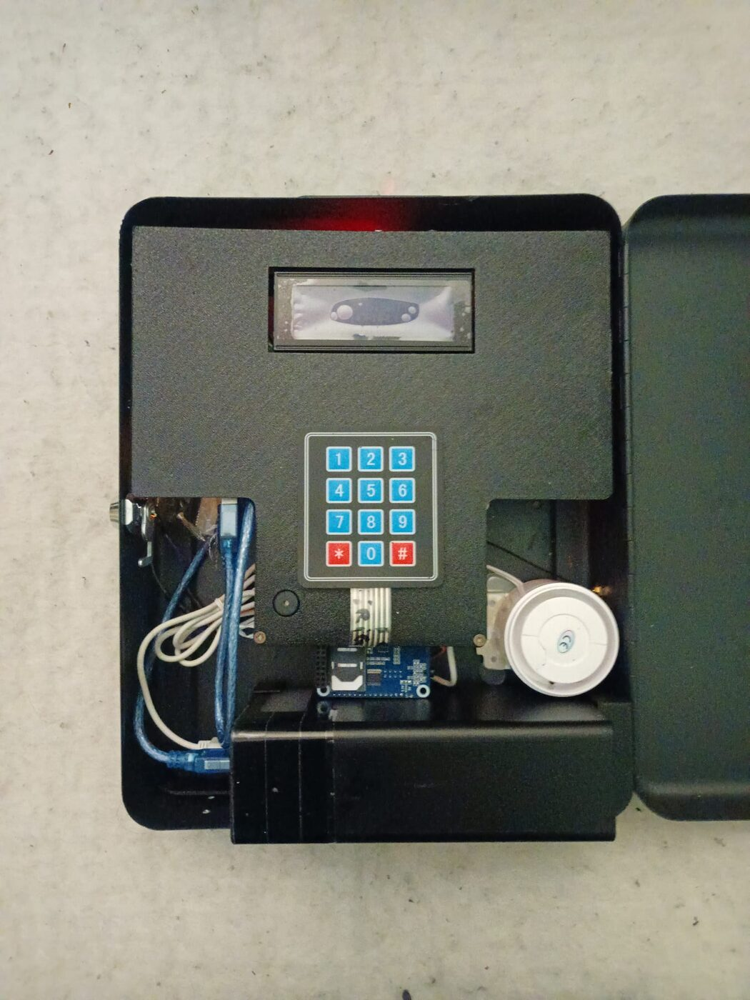
Panoramica
Come funziona
Il sistema ha due stati principali: NORMAL (mostra lo stato e
accetta il PIN) e CONFIG (menu di configurazione). L'allarme
si attiva da menu con conto alla rovescia oppure via RF ricevendo il codice
del dispositivo; si disattiva digitando il PIN e confermando con
#. Allo scatto, il modulo GSM invia un SMS al numero configurato
e la sirena su relè entra in funzione.
Caratteristiche principali
- LCD 20×4 su I²C (0x27) per stato e navigazione menu.
- Tastiera 4×3 per PIN, navigazione e configurazione.
- Sensori RF 433 MHz: associazione, trasmissione codice e cancellazione (fino a 20 sensori).
- Persistenza EEPROM con controllo di versione dei dati.
- SMS via SIM7600 con comandi AT su
Serial1. - Attivazione/disattivazione con PIN o via codice RF.
- Sirena su relè esterno più buzzer integrato.
- Retroilluminazione regolata via PWM.
Architettura
Firmware modulare
Il codice è diviso per responsabilità: un file core per stato e ciclo principale, sette moduli per hardware e funzioni.
PowerOn(), sendATcommand(), SendingShortMessage(), controllo alimentazione via POWERKEY.VERSION = 119).LCDNormal() (stato) e LCDConfig() (menu).ConfigOptions(), CheckKeypadMenu(), GetConfig().TestIO(), SendRFCode(), GetRFCode(), DelRFCode().AlarmON()/AlarmOFF(), SMS di attivazione/disattivazione, abilitazione RF.Pinout principale
| Segnale | Pin | Funzione |
|---|---|---|
| POWERKEY | 4 | Accensione modulo GSM |
| FLIGHTMODE | 3 | Modalità aereo GSM |
| GSMRELAY | 11 | Alimentazione modulo GSM |
| RFDATA | 2 | Ricezione RF (INT0) |
| RFTRASMISSION | 14 | Trasmettitore RF |
| EXTALARM | 13 | Ingresso allarme esterno (opzionale) |
| EXTRELAY | 12 | Uscita sirena |
| BUZZERPIN | 5 | Buzzer piezo |
| LUMINOSITY | 6 | PWM retroilluminazione LCD |
| Tastiera | 24,26,28,30 / 25,27,29 | Righe / colonne 4×3 |
| LCD I²C | 20 SDA / 21 SCL | Bus I²C, indirizzo 0x27 |
Interfaccia
Menu su LCD
Navigazione con * (scorri) e # (conferma). Voci:
Attiva Allarme · Modifica Seriale · Modifica PIN · Modifica Telefono ·
Associa Sensori · Elimina Sensori · Trasmetti Codice · Test I/O · Esci.
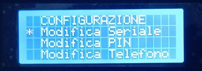
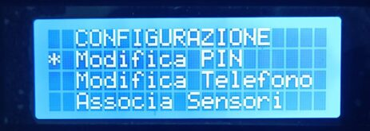
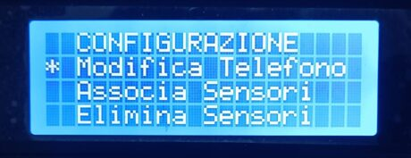
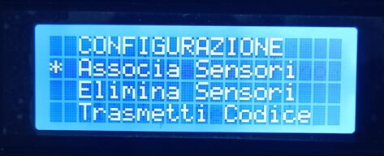
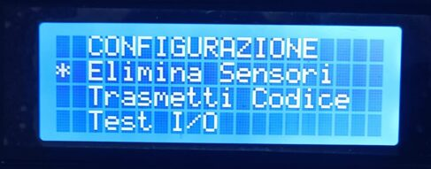
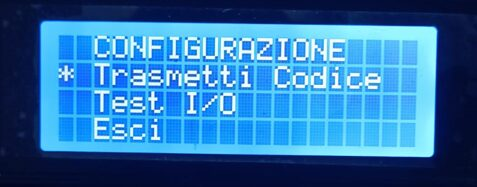
Galleria
Componenti, base e contenitore
Clic su un'immagine per ingrandirla. Frecce per scorrere, Esc per chiudere.
Componenti
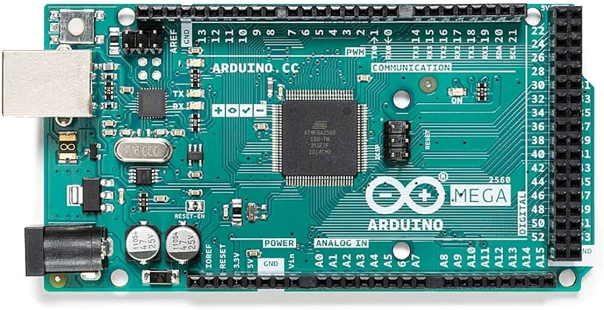
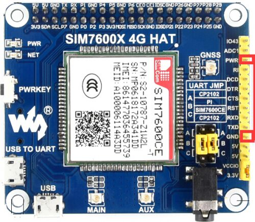
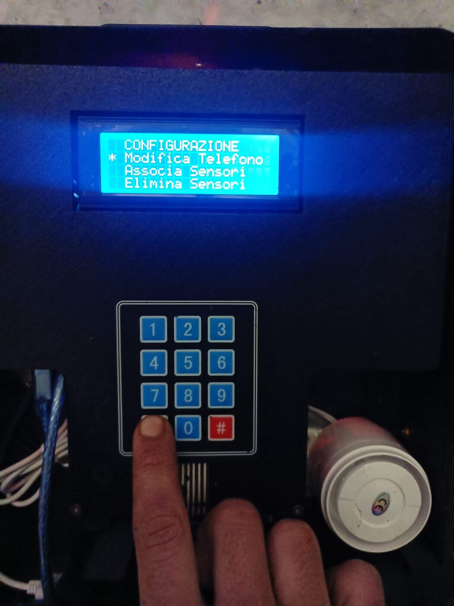
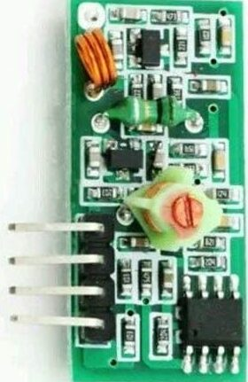
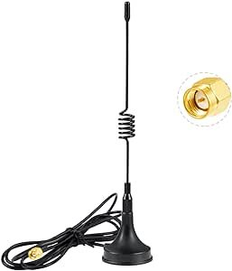
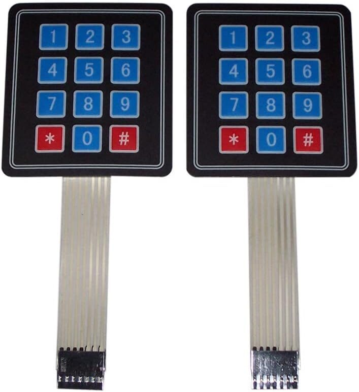
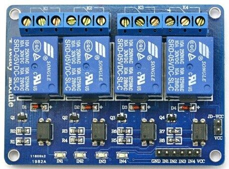
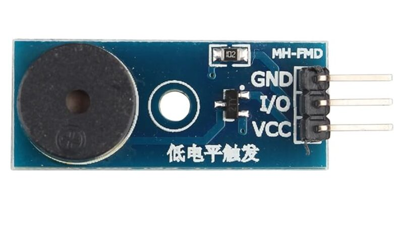
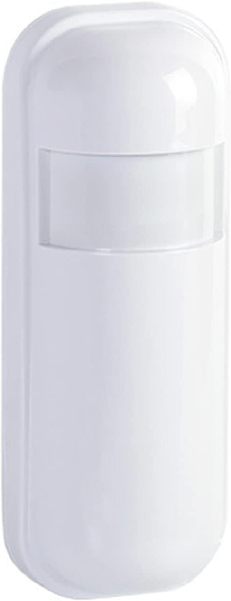
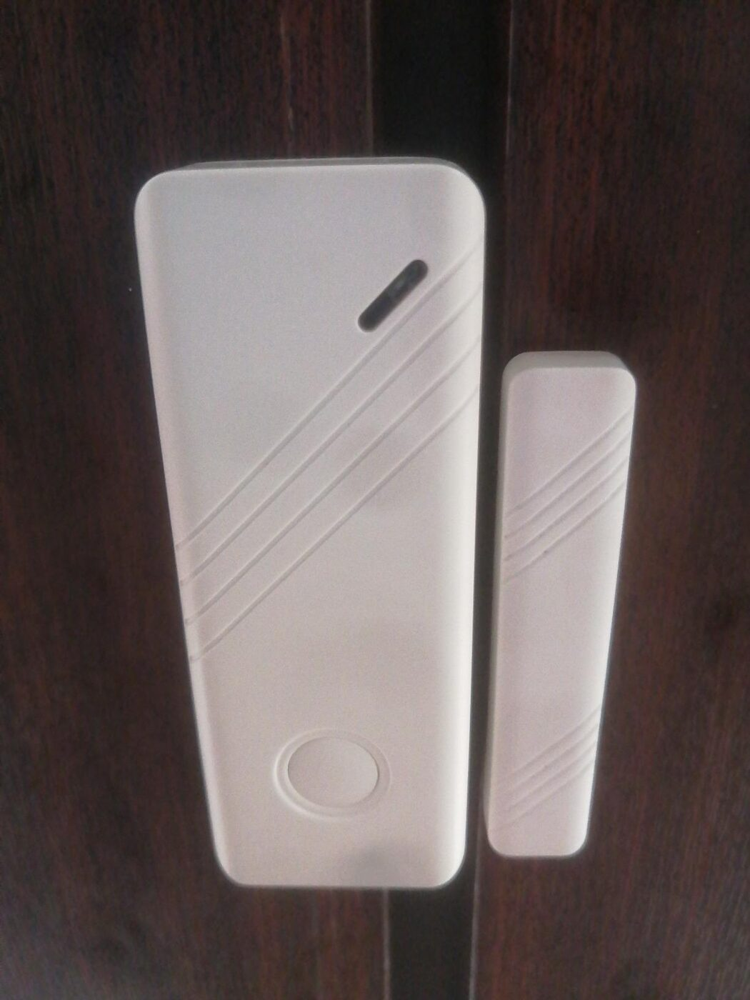
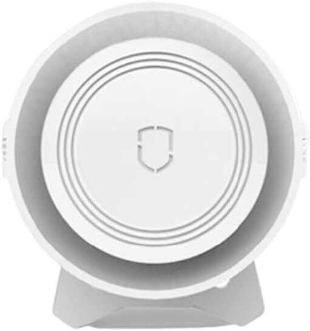
Base circuitale
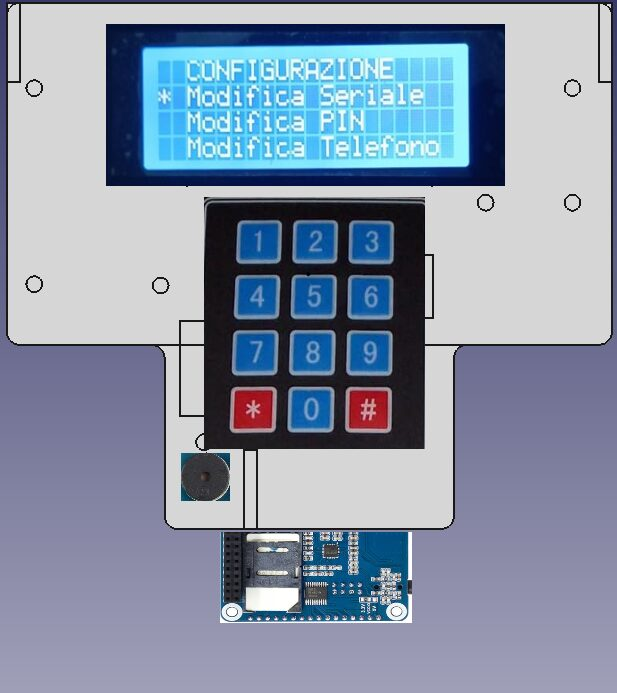
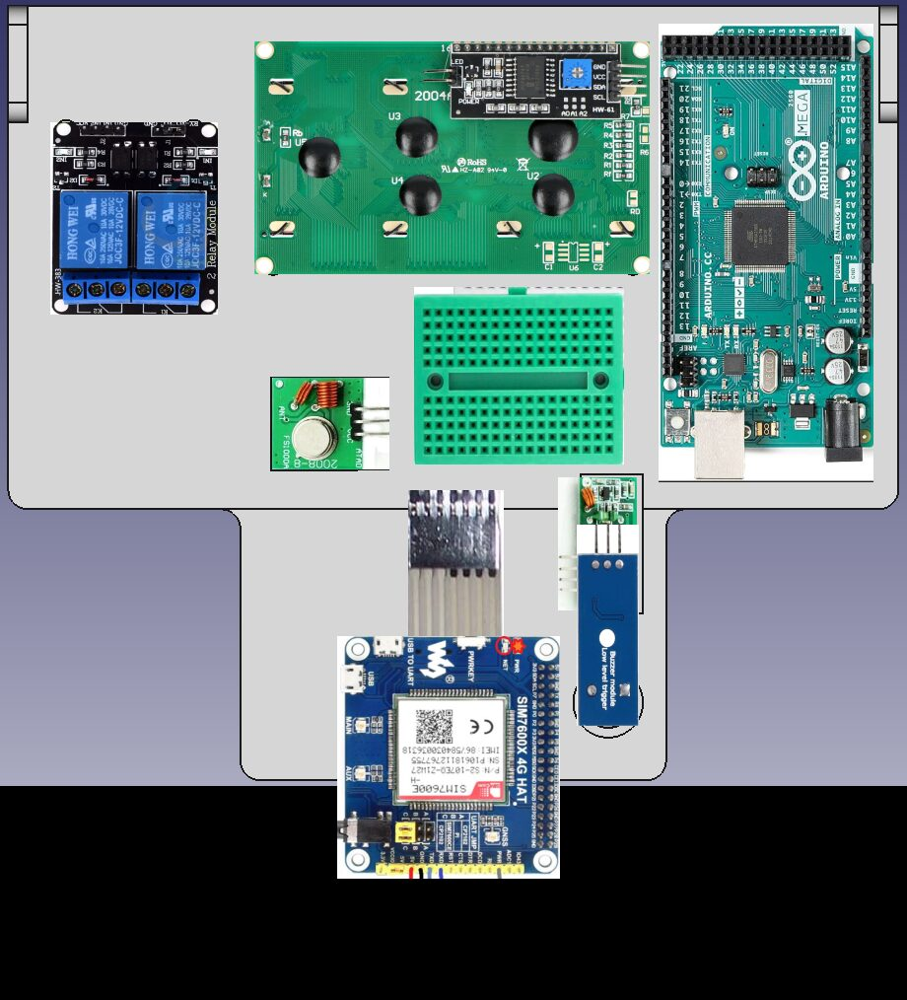
Contenitore
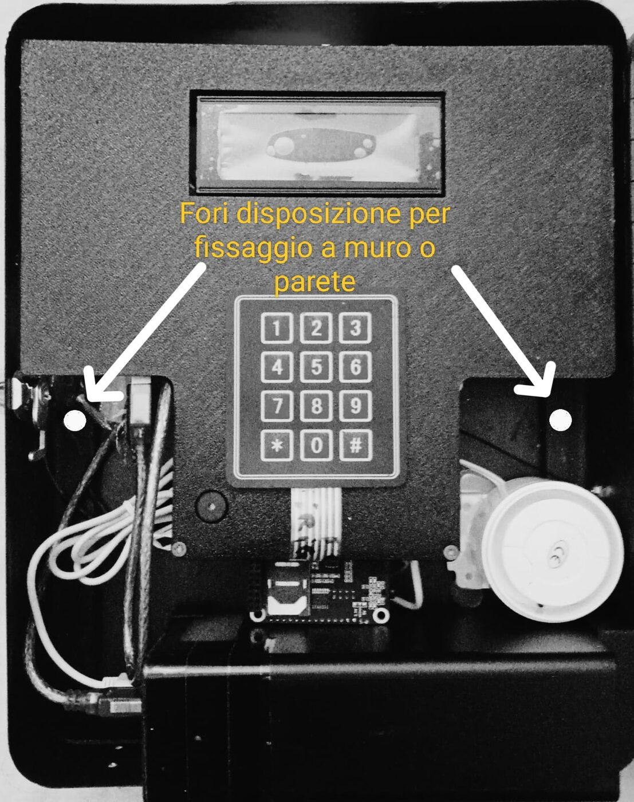
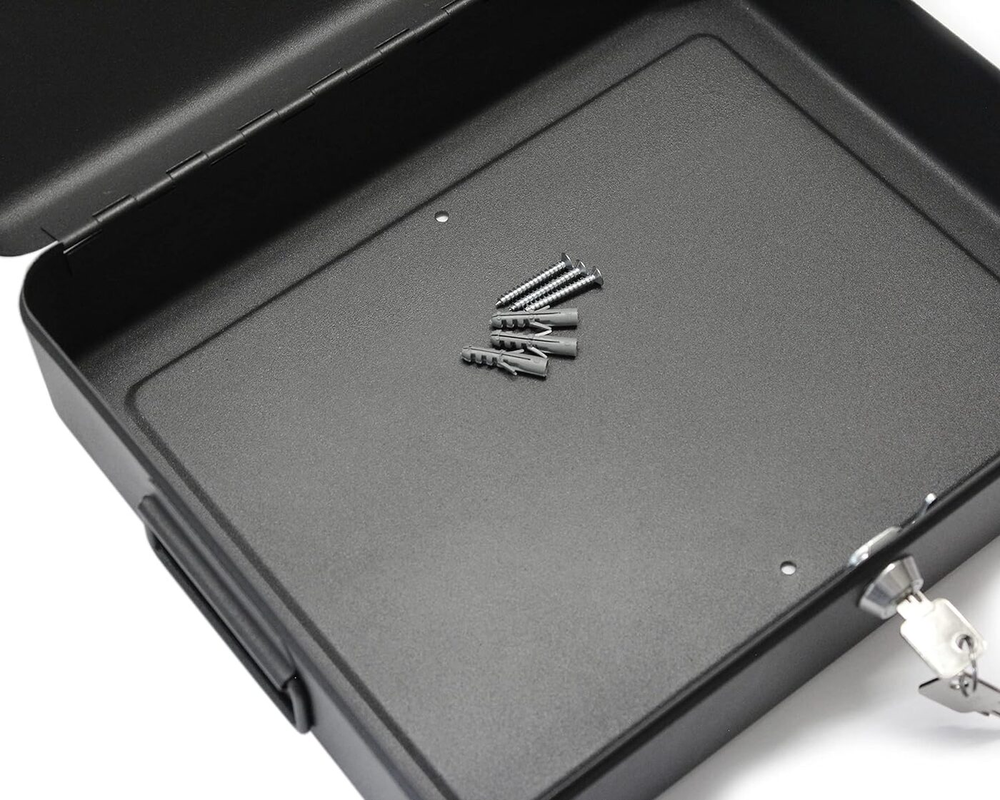
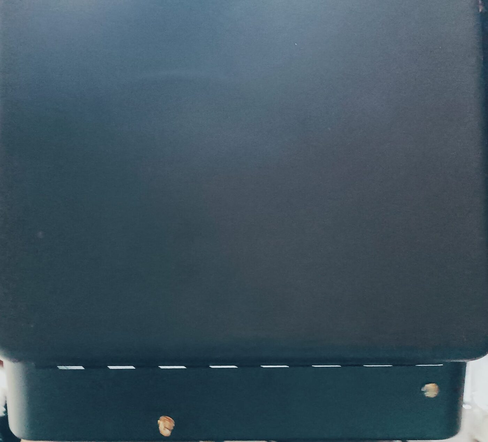
Toolchain
Build & upload
Progetto per Arduino IDE o arduino-cli. Il modulo GSM comunica
via comandi AT su Serial1 (TX1/RX1).
# core AVR arduino-cli core update-index arduino-cli core install arduino:avr # compila e carica sul Mega arduino-cli compile --fqbn arduino:avr:mega . arduino-cli upload -p /dev/ttyACM0 --fqbn arduino:avr:mega .
Progetto personale sviluppato per uso privato: il codice sorgente non è pubblico. Questa pagina è la documentazione tecnica del progetto — per dettagli implementativi o una versione adattata alle tue esigenze, scrivimi.